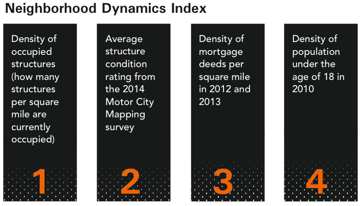
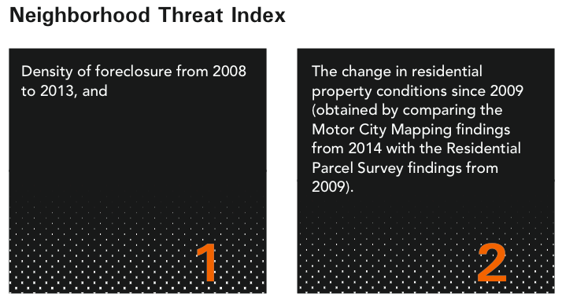
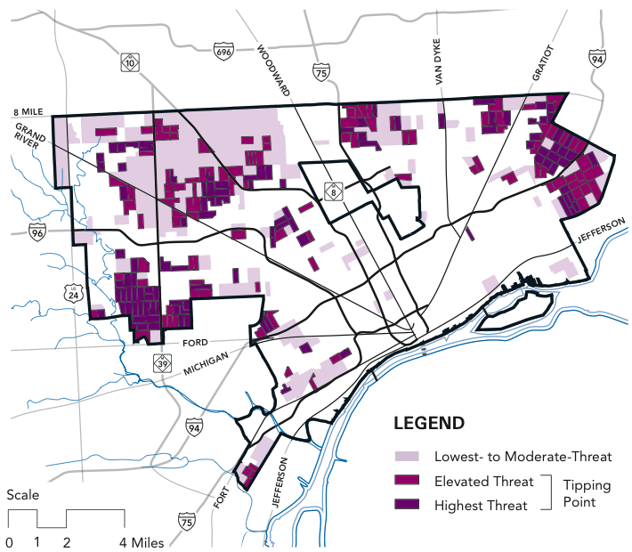

With the best available information about vacancy and blight in Detroit, the city now needs to look beyond sheer numbers. Blight removal in Detroit must occur in geographic areas of concentration, rather than the scattered, habitually random, approaches of the past. Addressing blight holistically within specific geographies stops the cancer (blight) from spreading, treats it, and then creates a strong base for current residents to realize the future.
After significant research, investigation, and analysis, the Task Force concluded that a consistent, clear methodology was needed to achieve the most impactful outcome.
What neighborhoods do we engage at what point in time? What blocks? What structures?
There are numerous data points that need to be thoroughly evaluated to answer these questions.
What was clear was that a strong analytics tool was necessary to derive the best solutions.
The Maximizing Community Impact (MCI) software tool was designed to take the big picture of Detroit’s needs to the neighborhood level. Like the Motor City Mapping database, the MCI is intended to start a conversation about where to begin the blight removal process. The goal of MCI is to identify areas throughout the city where investment in blight removal can potentially benefit the most Detroiters in the least amount of time.
The MCI uses the Motor City Mapping datasets and additional indices about property ownership and condition, neighborhood occupancy (focused specifically on the number of children under 18), housing market activity, and foreclosures. That information is used to identify Detroit geographies that are at a “tipping point”: areas of the city where immediate intervention has the best odds of preserving neighborhood stability and attracting new investment.
The local nonprofit Data Driven Detroit created MCI in consultation with Detroit Future City, Center for Community Progress, and Wayne State University’s Center for Urban Studies. The goals of MCI are to:
Because most vacancy and blight is found in residential neighborhoods, the MCI was designed to measure neighborhood conditions. Yet, because the MCI was also designed to capture and reflect the conditions on a street-by- street basis, it was discovered that boundaries for investment sometimes crossed traditional neighborhood geographies. For example, portions of the Brightmoor and Grandmont- Rosedale neighborhoods emerged as a single tipping point area. This location has been identified as a place where it makes sense to tackle blight first.
Based on geography and measurable data about housing market activity, property conditions, and population, MCI provides a valuable snapshot of the city’s residential realities as of spring 2014. It is intended as a recommendation for a discussion with community groups, organized block associations, and historic organizations.
MCI’s purpose is to guide the city and the Detroit Land Bank Authority to identify and connect the dots among the “tipping point neighborhoods” whose fate is intimately connected to gaining better traction for all of Detroit.
The MCI is a two-tiered process that can be applied across a wide variety of geographies. Layering two separate indices, the Neighborhood Dynamics Index and the Neighborhood Threat Index, the MCI process is performed sequentially to identify geographies that best meet the stated goals.
The first of the two indices, the Neighborhood Dynamics Index, measures four traits of neighborhoods:
 The second of the two indices, the Neighborhood Threat Index, was developed to examine a wide range of variables related to stability and safety in Detroit’s neighborhoods. Two factors were identified as reliable indicators of a wide range of conditions, including public safety.
The second of the two indices, the Neighborhood Threat Index, was developed to examine a wide range of variables related to stability and safety in Detroit’s neighborhoods. Two factors were identified as reliable indicators of a wide range of conditions, including public safety.
The map below displays the critical “tipping point” geographies within the city from highest to lowest threat. The highest threat areas (darkest purple) represent the areas of highest priority for blight intervention. With immediate intervention these geographies have the highest potential for stabilization and reinvestment. Lack of intervention has the potential to quickly result in significant decline in stability, occupancy, and overall population. Shortly thereafter, disinvestment, increases in vacancy, blighted properties, and crime is likely to follow.
The Detroit Land Bank Authority is currently activating $52 million of Hardest Hit Funds to remove or stabilize vacant structures in six targeted neighborhoods:
This initiative will remove roughly 4,000 of the approximately 78,000 blighted structures in the city.
The MCI will support the city’s next round of decision making. It will prioritize the next investments that will influence quality of life for the most residents while improving the city’s economic strength and minimizing risks to investors. MCI coupled with the Motor City Mapping database identified that 22,700 of the approximately 78,000 structures that need intervention are located within the “tipping point” geographies.
Together, the Hardest Hit Fund targeted neighborhoods and the Tipping Point geographies represents nearly 1/3 of all blighted structures in the entire city.
In addition, intervention within the Tipping Point geographies alone will positively impact over 193,384 Detroit residents (according to the 2010 Census) or 27% of the total Detroit residential population.
Together, MCI and the Motor City Mapping database are powerful, flexible tools for strengthening Detroit now and into the future – even after blight has been eradicated. MCI’s application has already revealed insights about how and where Detroiters live.
In addition, the MCI determined that tipping point areas in Detroit fall between those areas that are most stable and those areas that are most vacant.
RECOMMENDATION 4-1. The Detroit Land Bank Authority should use the MCI to identify initial areas of prioritization and work directly with community groups within those geographies to refine intervention strategies.
The Task Force believes utilizing a tool like MCI to identify tipping point neighborhoods is a key element in prioritizing blight intervention. With that said, the Task Force also realizes that the output of the algorithms needs to be enhanced by the analysis of unique factors, conditions and needs of each neighborhood. In addition, community engagement throughout the process assures that all of these more intangible factors receive full consideration. The outcome of the MCI is not to prescribe a specific type of investment or intervention, nor to make recommendations parcel by parcel. Rather, it is to guide prioritization and intervention. Once specific geographies are identified using the MCI and these other factors, the Motor City Mapping tool can provide information regarding specific structures within those areas meeting the definition of blight and those with blight indicators. This becomes the start of the blight intervention road map and a place for the City of Detroit and the Detroit Land Bank Authority to start discussions with impacted communities, neighborhoods, and the historic designation community.
RECOMMENDATION 4-2. The Task Force recommends that the Detroit Land Bank Authority continue to collaborate with the Michigan Historic Preservation Network and Preservation Detroit to inform the parcel-by-parcel decision making process.
RECOMMENDATION 4-3. The MCI should be revisited and refined annually to reflect current conditions.
The MCI was created to identify strategic areas of intervention in the face of Detroit’s currently overwhelming vacancy and constrained funds. These conditions will change over time, and the MCI should be modified and updated to reflect the new conditions.
Built on the Motor City Mapping platform, the MCI serves as an example of the tremendous potential for high-quality, detailed data to support public policy and investment decisions. Given that much of the data will be publicly available, the opportunities for other analytical tools to be developed are limitless.